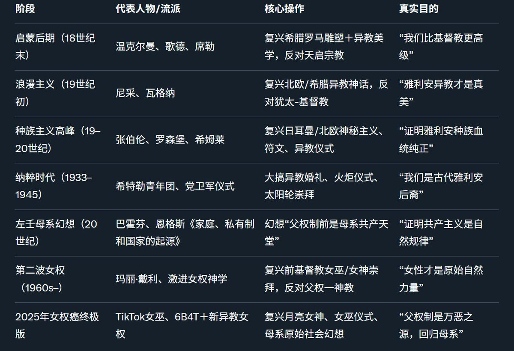

RT @JiangZeNico1: 启蒙运动后的臭老九为了标新立异和天启宗教划分界限就开始大搞新古典主义，近两百年来右派的种族主义者甚至比左棍更热衷于复兴公元前异教时代的自然崇拜和神秘主义以证明雅利安人的种族优越性（当然左棍也喜欢幻想父权制出现前的母系共产主义），这套厚古薄今的…


启蒙运动后的臭老九为了标新立异和天启宗教划分界限就开始大搞新古典主义，近两百年来右派的种族主义者甚至比左棍更热衷于复兴公元前异教时代的自然崇拜和神秘主义以证明雅利安人的种族优越性（当然左棍也喜欢幻想父权制出现前的母系共产主义），这套厚古薄今的异端邪说最后被进步逼女权癌全盘继承。 https://t.co/jOsZ6lpY3g https://t.co/cdmgLXYK35